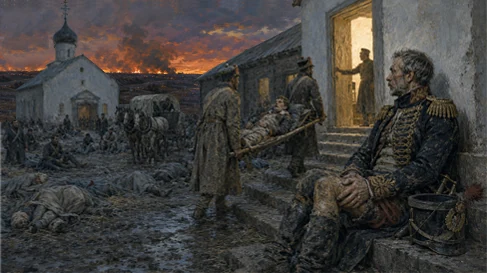

Acrid black powder. Iron-thick. Deafening.
Sweat-soaked wool. Wet leather. Burning thatch.
The smell of 70,000 men being torn apart.
Borodino. Seventy miles west of Moscow. The 7th of September 1812.
Golden wheat fields. Trampled into red mud.
Gentle ravines. Choked with bodies.
A landscape rewritten by artillery.
Earthen walls. Wooden stakes.
Twelve hundred cannons staring across the divide.
A quarter million men packed into three square miles.
Unyielding. Absolute. A meat-grinder.

Writing later in his memoirs, Dominique-Jean Larrey put the number at around two hundred. Not patients seen. Amputations. In the first twenty-four hours of the battle. By one man with his own two hands.
That is roughly one every seven minutes. Day and night. Without ceasing.
Larrey could not make that number smaller. Not even by one. He had the surgeons, daylight, and instruments the field allowed. No more. No less. Every variable on that field was fixed...except one.
The order.
The system Larrey inherited had an answer for days like this. Patience.
The wounded stayed where they fell. Then they were gathered, all at once, when the fighting stopped. This was not cruelty. It was doctrine. To move men mid-battle was disorder, and disorder got men killed.
So the rule was: wait for the battle to end. And it solved one problem by creating two others.
First, time became part of the wound. A man did not just wait for help. He bled into the wait. Second, arrival became a flood. The surgeons did not receive patients in a stream. They received them in a pile.
The fix would not come from a general. Or a minister. Or some grand architect of war.
It came from a surgeon who had already washed out of the Navy.
Orphaned at thirteen. Raised by a village priest. Sent to Toulouse to learn surgery. When Paris called, he walked there because he had no money. Four hundred miles. Then the Navy sent him toward Newfoundland, and the future father of emergency medicine got so seasick he quit within six months.
He could not handle a boat.
But he could look at a battlefield and see the part everyone else had mistaken for order.
In 1792 he joined the Army of the Rhine and started counting the old rule's cost. Not in bodies. In hours. How long should a man lie in a field waiting on care? Twenty-four hours? Thirty-six? Long enough for tetanus. Long enough for sepsis. Long enough that the surgery, when it came, was worse than the one available hours earlier.
The system was not overwhelmed. It was orderly. It was orderly and it was killing people, and those two facts had nothing to do with each other, which is precisely what made it so hard to see.
Larrey's answer is usually remembered as one innovation. It was two.
The first? Reach the wounded sooner.
He built the ambulance volante, the flying ambulance, borrowing the idea from the horse artillery and pointing it at a different job. Light sprung wagons. Water, food, dressings, surgery on the way.
Then he drove them into the heart of the battle instead of waiting for it to end.
Twenty-four to thirty-six hours became nearly one.
The second? Sort them when they arrived.
That happened somewhere else, back at the field hospital three miles behind the lines. Now the wounded had been gathered quickly. All of them. They were no longer scattered across the battlefield. They were at the field hospital. Bleeding. And the old system's hidden problem was no longer hidden. Who’s first?...
He took a plain French word, trier, to sort, and made it the name of a job. Triage.
Then, he wrote down the rule: “...always start with the most dangerously wounded without regard to rank or distinction.”
And its other half, the part that gets quoted less and costs more: “Those less severely wounded must wait until the gravely hurt have been operated and addressed.”
This was an army where rank was not courtesy. It was architecture. And Larrey cut through it.
Not the officer first. The worst wound first.
A general with a shattered leg could wait behind the farm boy with a belly wound, and a captured enemy soldier was afforded the same care as a French soldier.
Identity dropped out of the calculation. Severity became the signal. Rank was still the loudest thing in the room, but no longer the truest one.
And here is the small mechanical thing that made it work.
The sorting did not disappear. Someone still had to decide. Larrey changed who paid for the deciding.
In the old system, the sorting of the wounded happened everywhere, all the time, by everyone: exhausted men re-arguing a diagnosis a hundred times an hour. Larrey moved that cost to one place, under one rule, settled in advance.
The wounded did not become fewer. The work did not get lighter. The judgment did not disappear. It just stopped being made by the wrong person, at the wrong moment, from scratch — and the wound, not the rank or the noise or the hour, became the thing that answered.
And there was a limit. Larrey found it the same day he proved the point. The two hundred amputations were not enough by themselves. The wounded still needed straw, blankets, food, a place to lie down. “We were unhappily lacking all resources,” he wrote.
The order was right and it still was not enough.
Sequence is not a solvent. Past some point the arithmetic is just the arithmetic. You stop sorting and start cutting things loose.
But that point sits much further out than it looks. Most of us quit sorting long before the arithmetic defeats us.
Every task arrives carrying the same question: Should this come first?
And we answer it again. And again. And again, until the loudest demand begins to sound like the most important one.
That is what overwhelm actually is. Not too much work. Too many decisions deferred until the moment you're least equipped to make them.
Larrey did not work faster, or care less, or even find a way to reduce the number of wounded soldiers.
He decided the order before the shooting started, once, in the quiet, while he could still think. Then, when the field turned chaotic, he did not have to invent the order from scratch.
The old doctrine waited for the battle to end. His counterproposal was to settle it before the battle had even begun.
And that is the part that survived the battlefield.